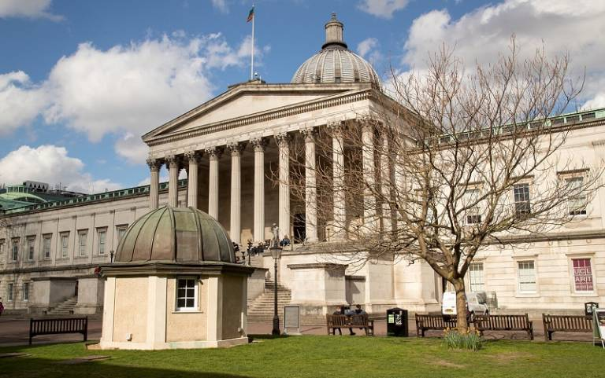

Second Meeting of the Southern Logic Seminar, UCL, London
The second meeting of the Southern Logic Seminar will be held on the afternoon of Tuesday 16 May at the University College London.
Talks will take place in Room GS01 at the Ground Floor of 66-72 Gower Street, WC1E 6EA, London.

Participants are encouraged to join the Southern Logic Seminar community on Slack, which is used for announcements and coordination. Please contact one of the organisers to be added.
The meeting is supported by a London Mathematical Society Joint Research Groups grant, with additional funding from the Mathematical Foundations of Computation group at London, and the EPSRC grant Nostrid (EP/V002376/1).
Programme
- 12:00–13:00 Arrival with lunch served at the venue
- 13:00–13:45 Bartek Klin (University of Oxford): Computation theory in nominal sets
- 13:45–14:15 Coffee and discussion
- 14:15–14:45 Keji Neri (University of Bath): The strong law of large numbers and computability
- 14:45–15:15 Ayberk Tosun (University of Birmingham): Patch Locale of a Spectral Locale in Univalent Type Theory
- 15:15–15:45 Dario Stein (Radboud University Nijmegen): Categorical and Graphical Formalisms for Inference
- 15:45–16:15 Coffee and discussion
- 16:15–17:00 Elaine Pimentel (University College London): Ecumenical systems: From sequents to typing
Organisers
- Anupam Das (University of Birmingham)
- Thomas Powell (University of Bath)
- Fabio Zanasi (University College London), local organiser